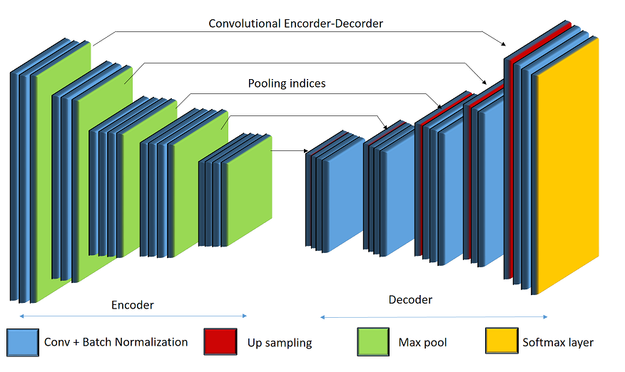

About US
Quantify the soil cover in classes of soil,residue and plant using semeantic segmentation is important researcher and agronomist.
The application utilizes a The Seg (semantic segmentation) Net (Network) architecture , a well-known encoder-decoder based architecture
model which vastly used in area of biomedicine and computer vision.
The model has been trained image set of 33000 images which are collected from the experimental plots in Kansas State University across Kansas.
The trained model then extracted to JSON format at implemented in this web app with the help of tensorflow js.
The model takes an input of a digital image of a crop field and quantify the image and returns percentages of the soil cover.
The user can view and download the classfication of the analysed image.

References
Badrinarayanan, V., Kendall, A., & Cipolla, R. (2017). SegNet: A Deep Convolutional Encoder-Decoder Architecture for Image Segmentation. IEEE Transactions on Pattern Analysis and Machine Intelligence, 39(12), 2481–2495. https://doi.org/10.1109/TPAMI.2016.2644615